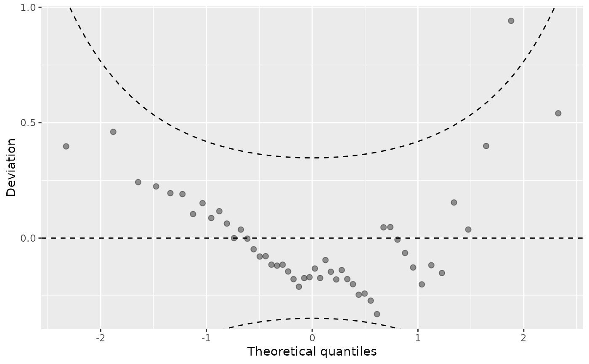
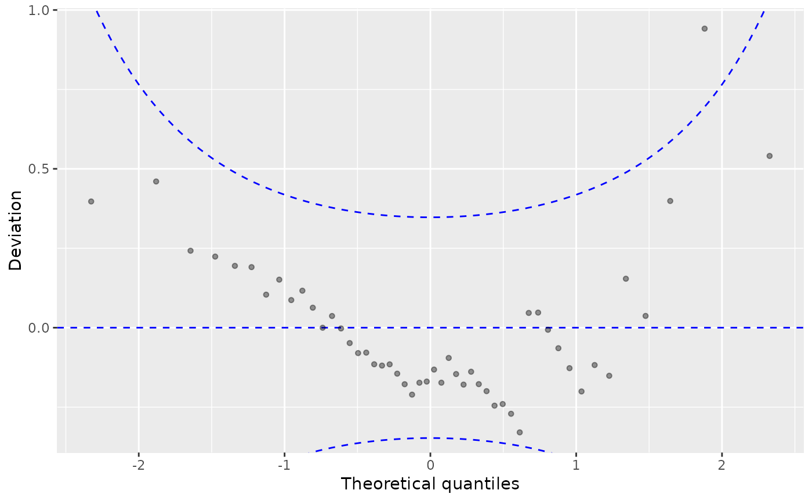

plot.wormplot.RdVisualize goodness of fit of regression models by Worm plots using quantile residuals.
# S3 method for wormplot plot( x, single_graph = FALSE, confint = TRUE, ref = TRUE, xlim = c(NA, NA), ylim = c(NA, NA), xlab = NULL, ylab = NULL, main = NULL, col = adjustcolor("black", alpha.f = 0.4), fill = adjustcolor("black", alpha.f = 0.2), alpha_min = 0.2, pch = 19, axes = TRUE, box = TRUE, ... ) # S3 method for wormplot points( x, confint = FALSE, ref = FALSE, col = "black", fill = adjustcolor("black", alpha.f = 0.4), alpha_min = 0.2, pch = 19, ... ) # S3 method for wormplot autoplot( object, single_graph = FALSE, confint = TRUE, ref = TRUE, xlim = c(NA, NA), ylim = c(NA, NA), xlab = NULL, ylab = NULL, main = NULL, colour = adjustcolor("black", alpha.f = 0.4), fill = adjustcolor("black", alpha.f = 0.2), alpha_min = 0.2, size = 2, shape = 19, linetype = 1, legend = FALSE, ... )
| x, object | an object of class |
|---|---|
| single_graph | logical. Should all computed extended reliability diagrams be plotted in a single graph? |
| confint | logical or quantile specification. Should the range of
quantiles of the randomized quantile residuals be visualized? If
|
| ref, xlim, ylim, col, fill, alpha_min, pch, axes, box | additional graphical
parameters for base plots, whereby |
| xlab, ylab, main, ... | graphical plotting parameters passed to
|
| colour, size, shape, linetype, legend | graphical parameters passed for
|
An list is returned invisibly with:
the theoretical normal quantiles,
the empirical quantile residuals.
FIXME: Q-Q residual draw quantile residuals (by default: transformed to
standard normal scale) against theoretical quantiles from the same
distribution. Alternatively, transformations to other distributions can also
be used, specifically using no transformation at all, i.e., remaining on the
uniform scale (via trafo = NULL or equivalently qunif or
identity).
Additional options are offered for models with discrete responses where randomization of quantiles is needed.
FIXME: Dunn KP, Smyth GK (1996). “Randomized Quantile Residuals.” Journal of Computational and Graphical Statistics, 5, 1--10.
data("CrabSatellites", package = "countreg") CrabSatellites2 <- CrabSatellites[CrabSatellites$satellites <= 1, ] m1 <- glm(satellites ~ width + color, data = CrabSatellites, family = poisson) m2 <- glm(satellites ~ width + color, data = CrabSatellites2, family = binomial) m3 <- lm(dist ~ speed, data = cars) w1 <- wormplot(m1, nsim = 100, confint = TRUE)w2 <- wormplot(m2, nsim = 100, confint = TRUE, plot = FALSE) w3 <- wormplot(m3, nsim = 100, confint = TRUE, plot = FALSE) plot(c(w1, w2), single_graph = FALSE, fill = c(1, 3), ref = c(2, 2))